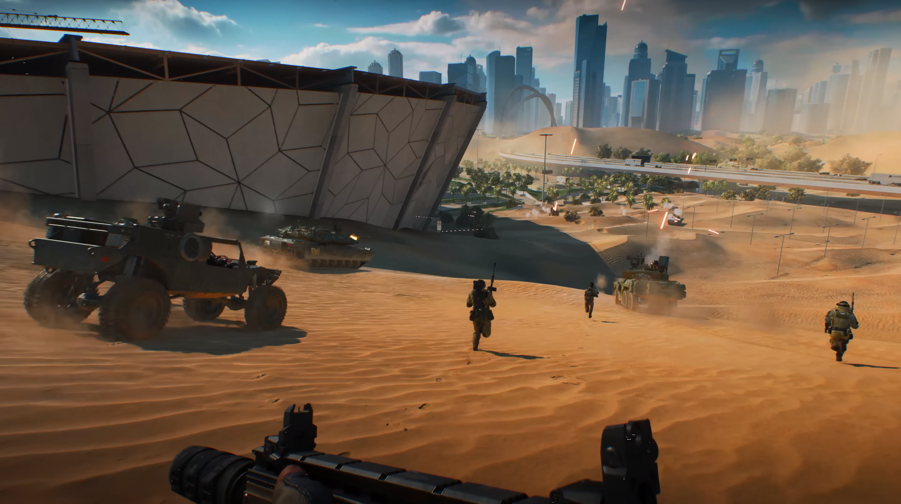

Xbox Series X является главной представительницей семейства игровых консолей Microsoft XBOX и консолью девятового поколения.
Xbox Series S
Xbox Series S является второй представительницей семейства игровых консолей Microsoft XBOX, консолью девятового поколения и удешевлённой версией XBOX Series S.
Только на XBOX
Куча игр 7, 8 и 9 поколения!
Halo Infinite
Жанр: Шутер
Последний луч надежды угас, человечество стоит на краю гибели, и
Мастер Чиф готов сразиться с самым опасным врагом в своей жизни.
Легендарная серия Halo возвращается. Вас ждёт самая масштабная
сюжетная кампания с Мастером Чифом в главной роли.
В игре Sea of Thieves есть морские путешествия, сражения,
исследования и сокровища — всё, что нужно настоящему пирату,
чтобы наслаждаться жизнью и по праву стать легендой. Роли не
заданы заранее, вы можете взаимодействовать с миром и с другими
игроками, как сами пожелаете.
Основанная на бестселлере EA, видеоигра Dante's inferno рассказает о
захватывающем путешествии Данте через девять кругов ада, где он
проходит через безысходность, похоть, чревоугодие, жадность, гнев,
ересь, жестокость, мошенничество и предательство в поисках любви.
Новая глава знаменитой саги Gears стала самой масштабной игрой
серии. На пороге войны Кейт Диаз пытается выяснить природу своей
таинственной связи с врагом и узнаёт, что истинная угроза для
Серы — она сама.
Sunset Overdrive превращает апокалипсис открытого мира в тактическую
игровую площадку. Мчитесь, гриндите и бегите по стенам Сансет-Сити с
нетрадиционным арсеналом. Сверхманевренность, уникальное оружие и
настраиваемые способности превращают взрывное и дерзкое приключение в
последние времена.
Легендарная серия файтинг-игр возвращается, неся с собой обновленные
визуальные эффекты, зашкаливающую динамику, потрясающий выбор бойцов,
заводную музыку и ПР-Р-Р-РЕРЫВАТЕЛИ КОМБО!!! Выберите себе бойца по вкусу,
ведь каждый из них — это классная анимация, уникальная тактика боя и
захватывающие спецприемы.
Джастин Ройланд представляет — High On Life. Людям угрожает
инопланетный картель, который хочет использовать их в качестве
наркотика. Твоя задача — освободить и взять в напарники харизматичное
говорящее оружие, победить Гармантюоза и его банду и спасти мир!
Искусство имитирует смерть. Шагните в живой
иллюстрированный мир, вдохновленный иллюминированными
рукописями и ксилогравюрами, и вы окажетесь в Европе,
стоящей на пороге масштабных религиозных и политических
перемен. Вместе с талантливым художником Андреасом Малером
вы столкнетесь с убийствами, скандалами и интригами,
прогремевшими в Баварских Альпах.
Мертвые ожили, а цивилизация пала. В этой игре, сочетающей
в себе элементы боевика, стратегии и симулятора, вашей
небольшой группе выживших необходимо собирать ресурсы для
постройки такой базы, которая устоит перед полчищами
ходячих мертвецов.
Отправляйтесь в путь по бескрайним просторам сказочного
мира, где вас ждут встречи с врагами-исполинами и сложные,
но интересные головоломки. Пришло время узнать, что
уготовано Ори судьбой.
Мир — огромное, красивое и опасное место, особенно если
вы уменьшились до размеров муравья. Сможете ли вы
процветать вместе с полчищами гигантских насекомых,
сражаясь за выживание в опасностях заднего двора?
Встречайте Quantum Break, игру о манипулировании
временем от мастеров кинематографичных блокбастеров
Remedy Entertainment. Quantum Break состоит из двух
частей: игры и сериала, причем решения, принятые в игре,
отразятся на ходе событий как в игре, так и в сериале.
Redfall — шутер с видом от первого лица для совместной игры в открытом
мире. Над игрой работает Arkane Austin — получившие немало наград авторы
Prey и Dishonored. Как и другие работы Arkane Austin, Redfall совмещает
боевик с сюжетной иммерсивной симуляцией — жанром, ставшим визитной
карточкой студии.
Starfield — первая игровая вселенная, созданная за последние 25 лет
Bethesda Game Studios, авторами The Elder Scrolls V: Skyrim и Fallout 4.
В этой инновационной ролевой игре вам предстоит отправиться к звёздам,
чтобы раскрыть величайшую тайну человечества.
Senua's Saga: Hellblade 2 — продолжение Hellblade: Senua's Sacrifice
для консоли нового поколения Xbox Series X. Как и прежде, вам предстоит
прожить историю воинственной Сенуа, которая вновь покоряет мрачный мир,
и она явно чем-то опечалена.
Исследуйте Чернобыльскую Зону Отчуждения полную опасных врагов,
смертельных аномалий и мощных артефактов. Напишите собственную
эпическую историю, прокладывая тропы к Сердцу Чернобыля. Выбирайте свой
путь обдуманно, ведь он определит вашу судьбу в конце.
Cuphead – это в прямом смысле слова "классический"
платформер. Классический, потому что все в нем выдержано
в духе 1930-х: от графики, кажется, вышедшей из-под пера
самого Уолта Диснея, до акварельных фонов и джазового
музыкального сопровождения.
Разгадайте мрачную тайну, раскрыть которую под силу лишь
медиуму. Исследуйте реальный мир и мир духов одновременно.
Используйте свои возможности ясновидения, чтобы решать
загадки, связывающие два мира, открывать зловещие тайны и
пережить встречи с Пастью – чудовищем, порожденным ужасной
трагедией.
Наслаждайтесь тысячами игр для Xbox Series X/S и классических игр,
а также замечательными преимуществами трёх выгодных
планов подписки, раскрывающих всё мощь вашей консоли XBOX.
Универсальный сервис, в котором есть все три подписки
Microsoft Xbox Cloud Gaming
Пользователи с активной подпиской имеют доступ к сервису облачного
гейминга Microsoft Xbox Cloud Gaming (находится на стадии открытого бета-тестирования).
Перки
Бесплатные бонусы, внутриигровой контент и предложения от компаний-партнеров.
ЗАГРУЗИТЕ СОТНИ ЗАМЕЧАТЕЛЬНЫХ ИГР
Xbox Game Pass
Все преимущества подписки Xbox Live Gold с дополнительным
доступом к невероятной коллекции игр.
Каталог игр
Это сервис-подписка, по которой вы получаете доступ к библиотеке,
где более 1000 игр. Список игр постоянно обновляется — одни
появляются, другие исчезают.
В сервисе также доступны классические игры, вышедшие на
предыдущих поколениях Xbox.
Первый день релиза
Главный плюс Game Pass — подписчики сервиса получают доступ ко всем играм
от студий Microsoft в день релиза, и они остаются в библиотеке навсегда,
в отличие от игр сторонних студий. Среди них франшизы The Elder Scrolls,
Fallout, Doom, Wolfenstein, Dishonored и Prey.
Играйте с обладателями Золотого статуса Gold
Xbox Live Gold
Играйте вместе с друзьями с Золотым статусом Xbox Live Gold
Самая продвинутая игровая сеть
Играйте с самыми известными сообществами геймеров по самой
современной многопользовательской сети.
Многопользовательские игры
Воспользуйтесь лучшими возможностями в состязательном и
кооперативном режимах консольной многопользовательской игры
онлайн.
Бесплатные игры
Получите 2 бесплатные игры в месяц.
Скидки на игры
Сэкономьте до 50% на выбранных играх в Microsoft Store.
САМАЯ БЫСТРАЯ И САМАЯ МОЩНАЯ КОНСОЛЬ XBOX ЗА ВСЮ ИСТОРИЮ
POWER YOUR DREAMS
ОПТИМИЗИРОВАНО ДЛЯ SERIES X|S
Игры, созданные с использованием набора для разработки Xbox Series X|S,
демонстрируют значительное сокращение времени загрузки и потрясающие
визуальные эффекты с частотой до 120 кадров в секунду.
Smart Delivery
ПОЛУЧИТЬ СЕЙЧАС
С помощью Smart Delivery вы можете купить поддерживаемую игру
один раз, после чего вам всегда будет доступна ее лучшая версия
для любой консоли, на которой вы играете.
ВПЕРЕД!
Будущие приключения, текущие увлечения и классические игры -
Xbox Series X станет лучшей консолью, чтобы насладиться
тысячами любимых игр четырех поколений Xbox.
12 ТЕРАФЛОПС ВЫЧИСЛИТЕЛЬНОЙ МОЩНОСТИ
Благодаря вычислительной мощности 12 терафлопс в системе на
кристалле (SOC) и архитектурам AMD Zen 2 и RDNA 2 можно
создавать миры, заслуживающие пристального изучения.
ВЫГЛЯДИТ ЛУЧШЕ. ИГРАЕТ ЛУЧШЕ.
Благодаря архитектуре AMD Zen 2 и RDNA 2 технология трассировки лучей
DirectX обеспечивает реалистичное освещение, тени и точные отражения,
позволяя создавать динамичные и живые миры.
ВСЛУШАЙТЕСЬ, ЗВУК ВАС ОКРУЖАЕТ.
Трехмерный пространственный звук 3D Spatial Sound - новый шаг
в эволюции аудиотехнологий, использующий продвинутые алгоритмы
для создания захватывающих реалистичных миров, переносящих вас
в эпицентр событий.
ИГРЫ С ИСТИННЫМ РАЗРЕШЕНИЕМ 4К
Xbox Series X обеспечивает сенсационно плавную частоту до 120 к/с и
яркую и контрастную HDR-картинку. Полностью погрузитесь в игру и
наслаждайтесь более четкими персонажами, яркими мирами и невероятными
деталями в сверхреалистичном качестве 4K.
СОЗДАНА БЫТЬ БЫСТРОЙ
Сочетание новой системы на кристалле (SOC) и архитектуры Xbox
Velocity обеспечивает максимальную скорость, в то время как
процессор и специализированный твердотельный накопитель объемом
1 ТБ отдают вам полный контроль и позволяют разгоняться с
0-60 до 120 к/с.
УВЕЛИЧЕННОЕ ХРАНИЛИЩЕ
Карта расширения памяти Seagate для Xbox Series X|S подключается к
задней панели консоли через выделенный разъем расширения хранилища и
воспроизводит работу встроенного специализированного твердотельного
накопителя консоли, обеспечивая дополнительное игровое хранилище и
сохраняя производительность.
ПОЛНЫЙ КОНТРОЛЬ
Беспроводной геймпад Xbox предлагает элегантный дизайн,
утонченный комфорт и мгновенную передачу в руки знакомого
с ним человека.

БУДЬ ВПЕРЕДИ ВСЕХ
Наслаждайтесь играми в формате до 4K и 60 кадрами в секунду с
Multiplayer Arena, которая поддерживает до 120 кадров в
секунду, улучшенный 3D пространственный звук и многое другое.
GAME PASS
МГНОВЕННЫЙ ДОСТУП К БИБЛИОТЕКЕ
Откройте для себя новую любимую игру. Получите доступ к более
чем 100 высококачественным играм, а также все преимущества
Xbox Live Gold и EA Play при подписке на Xbox Game Pass
Ultimate.
Xbox Series X
Модифицированный AMD Ryzen 3-го поколения на базе
7-нм+ микроархитектуры Zen 2 (8-ядер/16-потоков) @ 3,8 ГГц,
модифицированный AMD Radeon Navi на базе 7-нм+ микроархитектуры
RDNA 2 с поддержкой трассировки лучей на 12,2 TFLOPS,
52 CUs @ 1,825 ГГц, 16 ГБ/320-бит GDDR6 оперативной памяти,
NVME SSD на 1 ТБ постоянной памяти, оптический Blu-Ray Disc привод.
Модифицированный AMD Ryzen 3-го поколения на базе
7-нм+ микроархитектуры Zen 2 (8-ядер/16-потоков) @ 3,6 ГГц,
модифицированный AMD Radeon Navi на базе 7-нм+ микроархитектуры
RDNA 2 с поддержкой трассировки лучей на 4 TFLOPS,
20 CUs @ 1,565 ГГц, 10 ГБ/128-бит GDDR6 оперативной памяти,
NVME SSD на 512 ГБ постоянной памяти, оптический привод отсутствует.